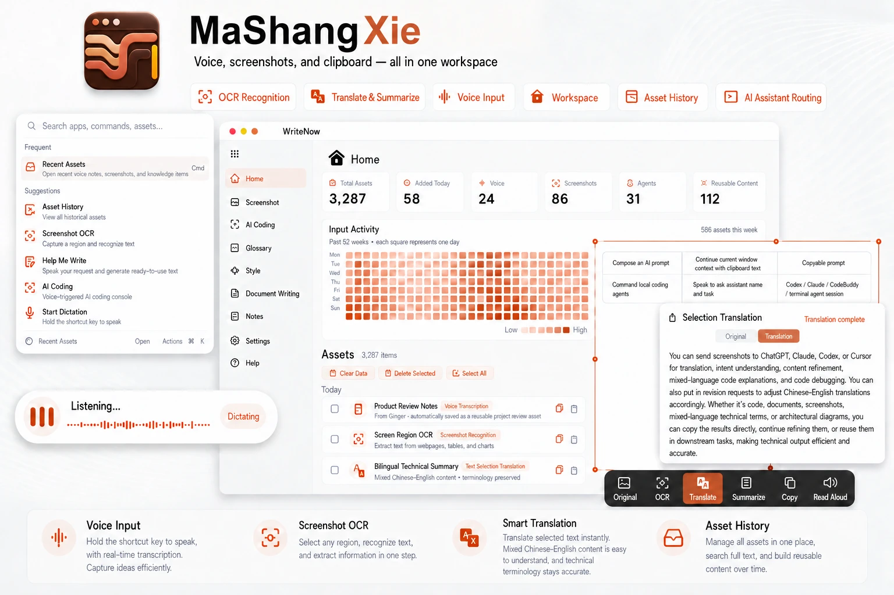
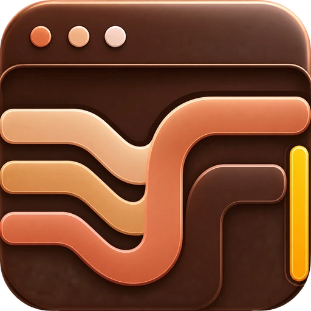

不跳窗口，不自动发送，文本回到当前光标。
VoxFlow for macOS, Windows & iOS
Speak, capture, translate, and keep the result.
VoxFlow stays attached to the app you are already using: voice input, screenshot OCR, translation, clipboard history, and AI assistant routing all become searchable local assets.
Speak to write
Capture text
Process selection
Keep assets
Route AI
v1.20.1 · Free & open source

截图、剪贴板图片、网页和错误弹窗都能变成文本。
翻译、总结、朗读和复制在同一个结果面板完成。
语音、截图和剪切板会沉淀为本地可搜索资产。
工作流
一条输入路径，覆盖四种高频场景。
把想法说进当前应用
按住听写热键，VoxFlow 在浮层里显示实时转写；松开后写回当前输入框，剪切板和输入法状态会恢复。
把屏幕内容变成文本
框选页面、表格、报错或会议材料，OCR 后可以立即翻译、总结、朗读或复制。
把临时内容沉淀成资产
最近语音、截图和剪切板会进入工作台，按来源、时间和全文检索，随时再次复用。
把任务说给本地 Agent
说出 Codex、Claude、CodeBuddy 或终端会话名称，VoxFlow 先确认目标，再投递可复制的任务指令。
使用文档
安装后按这个顺序开始。
VoxFlow 是菜单栏应用。第一次打开先补齐 macOS 权限，再设置听写热键；之后所有能力都围绕当前应用和工作台展开。
- 授权权限麦克风、辅助功能、屏幕录制和剪贴板权限用于录音、写回和截图识别。
- 设置听写热键选择一个按住触发的快捷键，在任意输入框里说话并松开回填。
- 打开启动台用 ⌥Space 查看最近资产、搜索历史、复制内容或执行动作。
- 处理截图和选中文本用截图 OCR 或划词动作打开结果面板，再翻译、总结、朗读或发送给任务助手。
Updates
Recent releases, pulled from GitHub.
The landing page stays in sync with the repository releases, with a compact summary of what changed.
快捷键
不用记很多，只要先记住这几组。
本地优先
你的输入现场，结束后恢复原样。
资产历史默认保存在本机。选择本地模型时音频留在设备上；只有主动选择云端 ASR 或外部模型时，才会把对应内容发送给你配置的服务商。
